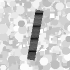

The Black Bar Image Dataset, or "BBID", was created in 2018.
in response to the need for a simple and scalable tool
to perform assessments and analyses on computational models.
The BBID meets three main specifications:
1) It is a universal assessment tool
It can be used to evaluate the widest range of computational models.
Moreover, it allows the comparison of results between different models.
In this sense, some versions of BBID are used as "Standard" of assessment
(see Download page).
2) It is scalable
 The nature of this set of images is naturally different
The nature of this set of images is naturally different
form collections of images taken from the real world.
Real-world images typically have a high level of complexity,
and an unknown number of uncontrolled parameters.
The BBID instead consists of synthetic images
in which it is possible to know and modulate
the level of complexity of each item.
in this sense, the BBID simply represents
a model of any possible image,
in whiwh the degre of abstraction is adjustable.
3) It is also an internal analysis tool
 It allows the functional analysis of the internal processing
It allows the functional analysis of the internal processing
of any computational model, even in the case of "Gray-" or "Black-Box".
The structure of its itels is simple, and allows to relate
the input elements with the results of intermediate processing steps.